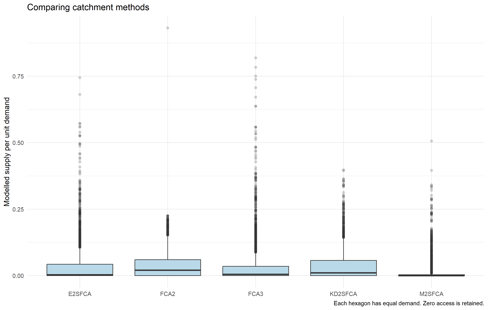

Geography of Accessibility · Catchment methods for eldercare in Singapore
Author
Zhenhua Liu
Published
October 18, 2026
1. Study question and reproducibility
How does the choice of catchment method change modelled access to eldercare in Singapore? This exercise follows the supplied In-class Exercise 7 slides, covering nearest-facility distance, 2SFCA, E2SFCA, Gaussian KD2SFCA, 3SFCA and M2SFCA. All maps and numerical results below are generated by the R code, with independent calculations used to check the package outputs.
The related Hands-on Exercise 7 uses different accessibility models. This page implements the classroom’s catchment workflow and its five floating catchment variants.
library(sf)
Linking to GEOS 3.14.1, GDAL 3.12.1, PROJ 9.7.1; sf_use_s2() is TRUE
library(dplyr)
Attaching package: 'dplyr'
The following objects are masked from 'package:stats':
filter, lag
The following objects are masked from 'package:base':
intersect, setdiff, setequal, union
library(readr)library(tidyr)library(tmap)
Registered S3 method overwritten by 'stars':
method from
st_interpolate_aw.stars sf
To reproduce from the ISSS626-GAA.Rproj project root in RStudio:
source("in-class7/R/install-packages.R") # first use onlysource("in-class7/R/download-data.R")system2("quarto", c("render", "in-class7/index.qmd"))
Package installation is separate from analysis. The setup pins catchment to revision b96fb58adcd0e476cbb634aeb6ce27981fbc1dc3; the executed session information records the installed versions. Input provenance and checksums accompany the analysis.
2. Import and prepare the teaching data
The subzones, hexagons, eldercare locations and OD matrix come from the instructor’s pinned teaching repository. Spatial layers use SVY21 / Singapore TM, EPSG:3414. The code repairs invalid polygons, checks feature identifiers, and verifies a complete OD table with no duplicated pairs.
Note
Each hexagon receives demand 100 and each facility capacity 100, following the classroom scenario. These are illustrative assumptions. The boundaries and facility records are historical; the results describe the teaching dataset and cannot establish current service shortages. Raw inputs remain local, with acquisition instructions provided.
The OD costs are road-network distances in metres, not travel times. I rename the long-table columns to from_id, to_id and dist, then explicitly match rows to demand hexagons and columns to facilities. Dividing by 1,000 converts the catchment calculations to kilometres. A successful pivot alone does not guarantee the correct feature order.
With active accessibility, opportunities belong to the destination facilities. I supply facility IDs and capacity to cost_to_closest(), rather than treating origin demand as destination opportunities. With positive capacity at every facility, the result should equal each origin’s minimum OD distance; the code verifies that equality before joining results by id.
Network distance to the nearest teaching-data facility. Darker orange indicates a longer distance; red points are facilities.
The median nearest distance is 4.064 km. 1281 hexagons are more than 5 km from their closest facility. Distance measures proximity but does not account for competition for supply.
4. Two-step floating catchment area: 2SFCA
For each facility, I divide its capacity by the demand within its catchment. For each hexagon, I then sum the ratios of reachable facilities. At a 5 km threshold, eligible origin–destination pairs receive equal weight:
Here \(S_j\) is capacity, \(P_i\) is demand, and \(w_{ij}\) defines the selected catchment. Scores represent modelled supply per unit demand. I follow the slides’ max_cost = 5 call, retaining the package’s boundary convention.
2SFCA with a 5 km catchment. Zero access is a separate legend class.
5. Enhanced 2SFCA: stepped distance decay
The classroom weights are 1, 0.4, 0.1, 0.05 and 0.01 for the successive 0–1, 1–2, 2–3, 3–4 and 4–5 km bands, and zero beyond 5 km. Nearer pairs therefore contribute more to both competing demand and allocated supply. The matrix validation below checks the actual band membership.
E2SFCA using the five distance bands from the supplied slides.
6. Gaussian kernel-density 2SFCA
I use weight = "gaussian" with the package default scale made explicit as 2 km. The slides do not specify a maximum distance for this model, so the Gaussian tail remains untruncated. This differs from the 5 km kernel calculation on the hands-on page; their scores should not be treated as interchangeable.
Gaussian KD2SFCA with a 2 km scale and no hard catchment cutoff.
7. Three-step floating catchment area: 3SFCA
The normalize_weight = TRUE option adjusts the stepped weights for provider choice. Inspection of the pinned package implementation shows that its effective weight is \(w_{ij}^2 / \sum_j w_{ij}\), used in both demand and supply steps. This page reproduces that implementation and checks it explicitly; it is not simply a row-normalized weight matrix.
3SFCA using the package’s selection-adjusted stepped weights.
8. Modified 2SFCA: M2SFCA
M2SFCA retains stepped weights for competing demand but squares the weights on the provider-allocation side. Distant supply is penalized further. Consequently, its demand-weighted total need not equal total capacity, so its absolute scores require separate interpretation.
The following checks reconstruct each method from dense weight matrices independently of catchment_ratio(). They verify finite non-negative scores and numerical agreement for every hexagon. For the four models using the same weights on both sides, the demand-weighted allocation must recover total capacity. M2SFCA is excluded from that conservation assertion because its supply-side weights differ.
Each map uses its own positive-score quantiles. This reveals spatial patterns but means colours cannot be compared as equal numerical intervals across maps. The table and boxplots retain the original score units; rank correlations compare ordering without assuming the methods have equal scales.
Distributions of modelled access across the 3,125 equal-demand hexagons.
long <- scores |>pivot_longer(all_of(methods), names_to ="method", values_to ="access")ggplot(long, aes(x = method, y = access)) +geom_boxplot(fill ="#b9d9e8", outlier.alpha =0.2) +labs(x =NULL, y ="Modelled supply per unit demand", title ="Comparing catchment methods",caption ="Each hexagon has equal demand. Zero access is retained.")

Distributions of modelled access across the 3,125 equal-demand hexagons.
At 5 km, 2SFCA has 1281 zero-access hexagons. E2SFCA, 3SFCA and M2SFCA use the same 5 km support, so they identify the same excluded cells. The untruncated Gaussian model has 0 zero scores. A small positive Gaussian score does not imply practically convenient access.
The Spearman correlation between 2SFCA and E2SFCA is 0.958, while E2SFCA and 3SFCA correlate at 0.995. These observed differences show how distance decay and choice adjustment affect location rankings.
Planning-region comparison
I dissolve subzones into planning regions and assign each hexagon to its largest overlapping region. Each hexagon contributes once, avoiding duplicated boundary cells. These are equal-cell summaries under the assumed equal demand, not population-weighted estimates.
regions <- mpsz |>select(REGION_N) |>group_by(REGION_N) |>summarise()# Intersect only geometry: do not split and repeat accessibility attributes.overlap <-st_intersection(st_geometry(hex_acc), st_geometry(regions))indices <-attr(overlap, "idx")assignment <-tibble(cell = indices[, 1], region = indices[, 2],area =as.numeric(st_area(overlap))) |>group_by(cell) |>slice_max(area, n =1, with_ties =FALSE) |>ungroup()regional_hex <- hex_accregional_hex$REGION_N <- regions$REGION_N[assignment$region[match(seq_len(nrow(hex_acc)), assignment$cell)]]stopifnot(nrow(regional_hex) ==nrow(hex_acc))regional_hex$REGION_N[is.na(regional_hex$REGION_N)] <-"OUTSIDE BOUNDARY"regional_summary <- regional_hex |>st_drop_geometry() |>pivot_longer(all_of(methods), names_to ="method", values_to ="access") |>group_by(REGION_N, method) |>summarise(cells =n(), median =median(access),mean =mean(access), zero_access_cells =sum(access ==0), .groups ="drop")knitr::kable(regional_summary |>mutate(across(c(mean, median), ~formatC(.x, format ="g", digits =4))))
REGION_N
method
cells
median
mean
zero_access_cells
CENTRAL REGION
E2SFCA
606
0.05353
0.09954
56
CENTRAL REGION
FCA2
606
0.09539
0.09609
56
CENTRAL REGION
FCA3
606
0.04279
0.1001
56
CENTRAL REGION
KD2SFCA
606
0.07747
0.09798
0
CENTRAL REGION
M2SFCA
606
0.003907
0.03419
56
EAST REGION
E2SFCA
498
0.002363
0.02884
208
EAST REGION
FCA2
498
0.02035
0.0296
208
EAST REGION
FCA3
498
0.003048
0.02864
208
EAST REGION
KD2SFCA
498
0.008005
0.02948
0
EAST REGION
M2SFCA
498
2.363e-05
0.009905
208
NORTH REGION
E2SFCA
621
0.0006618
0.01627
290
NORTH REGION
FCA2
621
0.007752
0.01835
290
NORTH REGION
FCA3
621
0.001249
0.0163
290
NORTH REGION
KD2SFCA
621
0.004091
0.01729
0
NORTH REGION
M2SFCA
621
6.618e-06
0.005672
290
NORTH-EAST REGION
E2SFCA
320
0.02911
0.04882
15
NORTH-EAST REGION
FCA2
320
0.04625
0.04972
15
NORTH-EAST REGION
FCA3
320
0.02243
0.04839
15
NORTH-EAST REGION
KD2SFCA
320
0.04665
0.04936
0
NORTH-EAST REGION
M2SFCA
320
0.001865
0.01817
15
WEST REGION
E2SFCA
1080
0
0.01814
712
WEST REGION
FCA2
1080
0
0.01826
712
WEST REGION
FCA3
1080
0
0.01804
712
WEST REGION
KD2SFCA
1080
4.504e-05
0.01797
0
WEST REGION
M2SFCA
1080
0
0.006969
712
best_regions <- regional_summary |>group_by(method) |>slice_max(median, n =1, with_ties =FALSE)
The region(s) with the highest median score across these model summaries are CENTRAL REGION. Regional medians conceal local pockets of weak access, so the maps remain necessary alongside the table.
Catchment sensitivity
I repeat basic 2SFCA at 3, 5 and 8 km. This isolates the hard distance threshold while holding facilities, demand and capacity fixed.
The 3 km scenario excludes 1963 cells; the 8 km scenario excludes 788. A larger catchment changes both reachable supply and competing demand, so individual scores need not rise monotonically as the threshold expands.
10. Reflection
Nearest distance answers a proximity question. Floating catchment methods additionally model competing demand, and the decay and allocation rules change which locations rank well. I would report the model assumptions and sensitivity results alongside any map, then replace the synthetic demand and capacity with observed older-resident counts and service places before making planning recommendations. Walking conditions, transport mode, service eligibility, cross-boundary options and network provenance would also need investigation.
---title: "in-class7"subtitle: "Geography of Accessibility · Catchment methods for eldercare in Singapore"author: "Zhenhua Liu"date: "2026-10-18"body-classes: exercise-pagetoc: truetoc-location: rightcode-tools: trueexecute: freeze: auto error: false warning: true---```{r}#| label: c7-register#| include: falseknitr::read_chunk("in-class7/R/analysis.R")knitr::opts_chunk$set(fig.width =11, fig.height =7, dpi =150)```## 1. Study question and reproducibilityHow does the choice of catchment method change modelled access to eldercare in Singapore? This exercise follows the supplied [In-class Exercise 7 slides](https://isss626-ay2026-27aug.netlify.app/in-class_ex/in-class_ex07/in-class_ex07-accessibility), covering nearest-facility distance, 2SFCA, E2SFCA, Gaussian KD2SFCA, 3SFCA and M2SFCA. All maps and numerical results below are generated by the R code, with independent calculations used to check the package outputs.The related [Hands-on Exercise 7](../handson7/index.qmd) uses different accessibility models. This page implements the classroom's **catchment** workflow and its five floating catchment variants.```{r}#| label: c7-packages```To reproduce from the `ISSS626-GAA.Rproj` project root in RStudio:```{r}#| eval: falsesource("in-class7/R/install-packages.R") # first use onlysource("in-class7/R/download-data.R")system2("quarto", c("render", "in-class7/index.qmd"))```Package installation is separate from analysis. The setup pins catchment to revision `b96fb58adcd0e476cbb634aeb6ce27981fbc1dc3`; the executed session information records the installed versions. [Input provenance](data/README.md) and [checksums](data/input-checksums.csv) accompany the analysis.## 2. Import and prepare the teaching dataThe subzones, hexagons, eldercare locations and OD matrix come from the instructor's [pinned teaching repository](https://github.com/tskam/IS415/tree/acaa1f9995d3d778a02a09c6bbdd5ef4f4eae773/Hands-on_Ex/Hands-on_EX11/data). Spatial layers use **SVY21 / Singapore TM, EPSG:3414**. The code repairs invalid polygons, checks feature identifiers, and verifies a complete OD table with no duplicated pairs.::: {.callout-note}Each hexagon receives demand **100** and each facility capacity **100**, following the classroom scenario. These are illustrative assumptions. The boundaries and facility records are historical; the results describe the teaching dataset and cannot establish current service shortages. Raw inputs remain local, with acquisition instructions provided.:::```{r}#| label: c7-inputs```### Align the distance matrix by feature IDThe OD costs are road-network **distances in metres**, not travel times. I rename the long-table columns to `from_id`, `to_id` and `dist`, then explicitly match rows to demand hexagons and columns to facilities. Dividing by 1,000 converts the catchment calculations to kilometres. A successful pivot alone does not guarantee the correct feature order.```{r}#| label: c7-matrix```## 3. Distance to the closest eldercare facilityWith active accessibility, opportunities belong to the **destination facilities**. I supply facility IDs and capacity to `cost_to_closest()`, rather than treating origin demand as destination opportunities. With positive capacity at every facility, the result should equal each origin's minimum OD distance; the code verifies that equality before joining results by `id`.```{r}#| label: c7-nearest#| fig-cap: "Network distance to the nearest teaching-data facility. Darker orange indicates a longer distance; red points are facilities."```The median nearest distance is **`r round(median(hex_acc$nearest_km), 3)` km**. **`r sum(hex_acc$nearest_km > 5)` hexagons** are more than 5 km from their closest facility. Distance measures proximity but does not account for competition for supply.## 4. Two-step floating catchment area: 2SFCAFor each facility, I divide its capacity by the demand within its catchment. For each hexagon, I then sum the ratios of reachable facilities. At a 5 km threshold, eligible origin–destination pairs receive equal weight:$$R_j = \frac{S_j}{\sum_i P_i w_{ij}}, \qquad A_i = \sum_j w_{ij}R_j.$$Here $S_j$ is capacity, $P_i$ is demand, and $w_{ij}$ defines the selected catchment. Scores represent modelled supply per unit demand. I follow the slides' `max_cost = 5` call, retaining the package's boundary convention.```{r}#| label: c7-2sfca#| fig-cap: "2SFCA with a 5 km catchment. Zero access is a separate legend class."```## 5. Enhanced 2SFCA: stepped distance decayThe classroom weights are **1, 0.4, 0.1, 0.05 and 0.01** for the successive 0–1, 1–2, 2–3, 3–4 and 4–5 km bands, and zero beyond 5 km. Nearer pairs therefore contribute more to both competing demand and allocated supply. The matrix validation below checks the actual band membership.```{r}#| label: c7-e2sfca#| fig-cap: "E2SFCA using the five distance bands from the supplied slides."```## 6. Gaussian kernel-density 2SFCAI use `weight = "gaussian"` with the package default scale made explicit as **2 km**. The slides do not specify a maximum distance for this model, so the Gaussian tail remains untruncated. This differs from the 5 km kernel calculation on the hands-on page; their scores should not be treated as interchangeable.```{r}#| label: c7-kd2sfca#| fig-cap: "Gaussian KD2SFCA with a 2 km scale and no hard catchment cutoff."```## 7. Three-step floating catchment area: 3SFCAThe `normalize_weight = TRUE` option adjusts the stepped weights for provider choice. Inspection of the pinned [package implementation](https://github.com/uva-bi-sdad/catchment/blob/b96fb58adcd0e476cbb634aeb6ce27981fbc1dc3/R/catchment_ratio.R) shows that its effective weight is **$w_{ij}^2 / \sum_j w_{ij}$**, used in both demand and supply steps. This page reproduces that implementation and checks it explicitly; it is not simply a row-normalized weight matrix.```{r}#| label: c7-3sfca#| fig-cap: "3SFCA using the package's selection-adjusted stepped weights."```## 8. Modified 2SFCA: M2SFCAM2SFCA retains stepped weights for competing demand but squares the weights on the provider-allocation side. Distant supply is penalized further. Consequently, its demand-weighted total need not equal total capacity, so its absolute scores require separate interpretation.```{r}#| label: c7-m2sfca#| fig-cap: "M2SFCA with squared provider-side weights."```## 9. Validate and compare resultsThe following checks reconstruct each method from dense weight matrices independently of `catchment_ratio()`. They verify finite non-negative scores and numerical agreement for every hexagon. For the four models using the same weights on both sides, the demand-weighted allocation must recover total capacity. M2SFCA is excluded from that conservation assertion because its supply-side weights differ.```{r}#| label: c7-validation```### Distributions and rank agreementEach map uses its own positive-score quantiles. This reveals spatial patterns but means colours cannot be compared as equal numerical intervals across maps. The table and boxplots retain the original score units; rank correlations compare ordering without assuming the methods have equal scales.```{r}#| label: c7-comparison#| fig-cap: "Distributions of modelled access across the 3,125 equal-demand hexagons."```At 5 km, 2SFCA has **`r sum(hex_acc$FCA2 == 0)` zero-access hexagons**. E2SFCA, 3SFCA and M2SFCA use the same 5 km support, so they identify the same excluded cells. The untruncated Gaussian model has **`r sum(hex_acc$KD2SFCA == 0)` zero scores**. A small positive Gaussian score does not imply practically convenient access.The Spearman correlation between 2SFCA and E2SFCA is **`r round(rank_correlations["FCA2", "E2SFCA"], 3)`**, while E2SFCA and 3SFCA correlate at **`r round(rank_correlations["E2SFCA", "FCA3"], 3)`**. These observed differences show how distance decay and choice adjustment affect location rankings.### Planning-region comparisonI dissolve subzones into planning regions and assign each hexagon to its largest overlapping region. Each hexagon contributes once, avoiding duplicated boundary cells. These are equal-cell summaries under the assumed equal demand, not population-weighted estimates.```{r}#| label: c7-regions```The region(s) with the highest median score across these model summaries are **`r paste(unique(best_regions$REGION_N), collapse = ", ")`**. Regional medians conceal local pockets of weak access, so the maps remain necessary alongside the table.### Catchment sensitivityI repeat basic 2SFCA at 3, 5 and 8 km. This isolates the hard distance threshold while holding facilities, demand and capacity fixed.```{r}#| label: c7-sensitivity```The 3 km scenario excludes **`r sensitivity$zero_access_cells[sensitivity$catchment_km == 3]`** cells; the 8 km scenario excludes **`r sensitivity$zero_access_cells[sensitivity$catchment_km == 8]`**. A larger catchment changes both reachable supply and competing demand, so individual scores need not rise monotonically as the threshold expands.## 10. ReflectionNearest distance answers a proximity question. Floating catchment methods additionally model competing demand, and the decay and allocation rules change which locations rank well. I would report the model assumptions and sensitivity results alongside any map, then replace the synthetic demand and capacity with observed older-resident counts and service places before making planning recommendations. Walking conditions, transport mode, service eligibility, cross-boundary options and network provenance would also need investigation.## Downloads and references- R scripts: [analysis](R/analysis.R), [data acquisition](R/download-data.R), [package setup](R/install-packages.R).- Data documentation: [provenance](data/README.md), [input checksums](data/input-checksums.csv).- Results: [hexagon scores](results/accessibility-by-hexagon.csv), [model summary](results/model-summary.csv), [regional summary](results/regional-summary.csv), [independent validation](results/validation.csv), [nearest distance summary](results/nearest-summary.csv), [rank correlations](results/rank-correlations.csv), [catchment sensitivity](results/catchment-sensitivity.csv).- Sources: [course slides](https://isss626-ay2026-27aug.netlify.app/in-class_ex/in-class_ex07/in-class_ex07-accessibility), [catchment reference](https://uva-bi-sdad.github.io/catchment/reference/catchment_ratio.html), [accessibility source](https://github.com/ipeaGIT/accessibility/blob/master/R/cost_to_closest.R).```{r}#| label: c7-session```